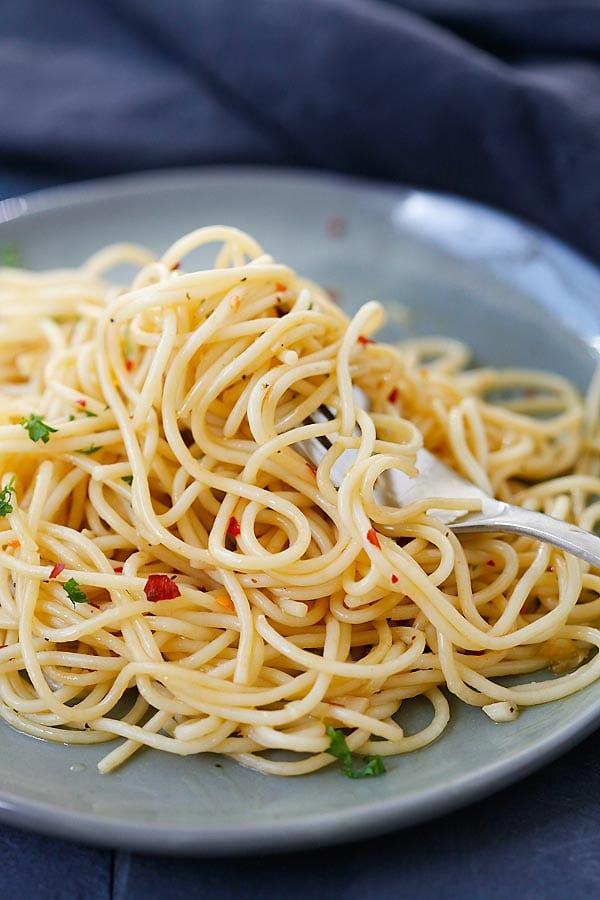

Mouth watering spaghetti

Ingridient list
- 8 oz. (226 g) spaghetti
- 2 tablespoons extra virgin olive oil (preferred) or olive oil
- 1 tablespoon melted butter
- 3 cloves garlic, minced
- salt, to taste
- 3 dashes ground black pepper
- red chili flakes, to taste
- parsley leaves, finely chopped, for garnishing
Instructions
- Cook the spaghetti according to the package instructions until al dente. Drain and set aside.
- Heat up a skillet and add the olive oil and butter. Saute the garlic until aromatic, then add the spaghetti. Season with salt, pepper, and chili flakes. Stir to combine well.
- Dish out, garnish with some parsley and serve immediately.